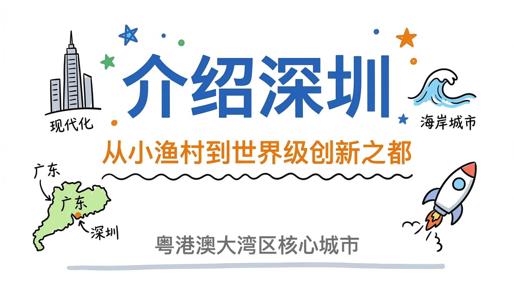
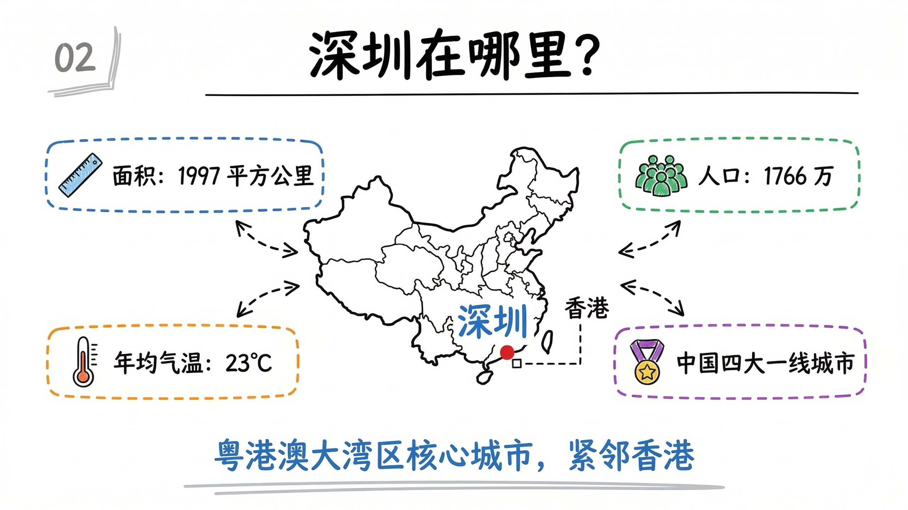
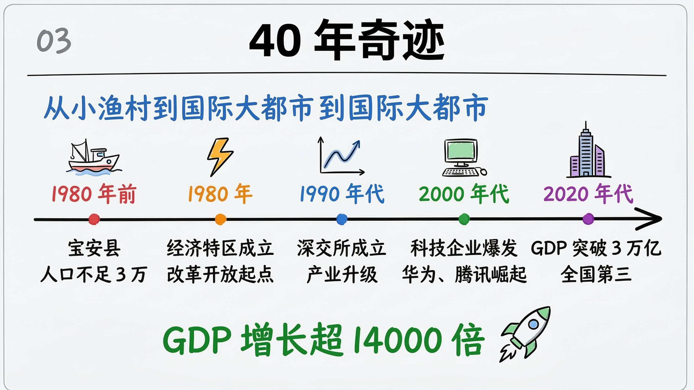
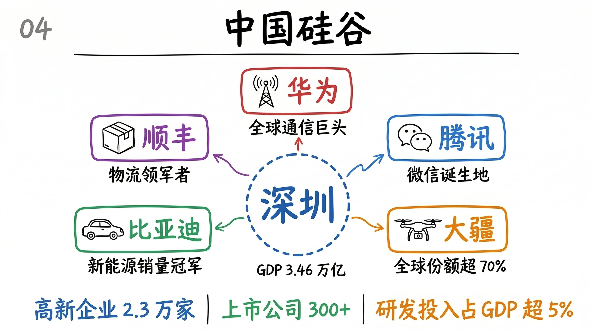
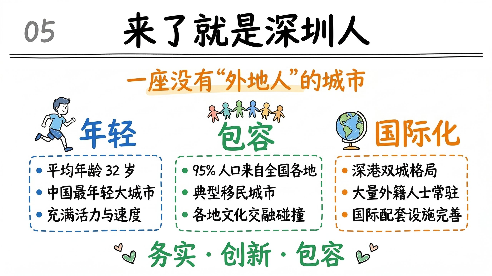
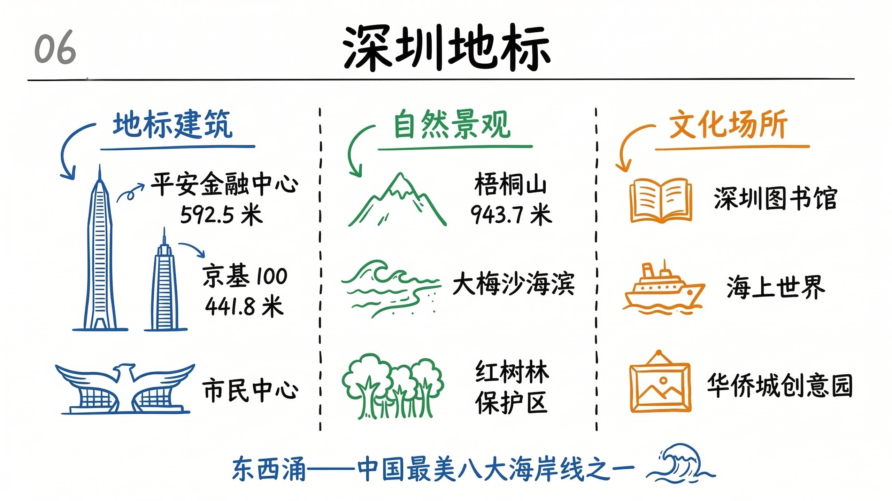
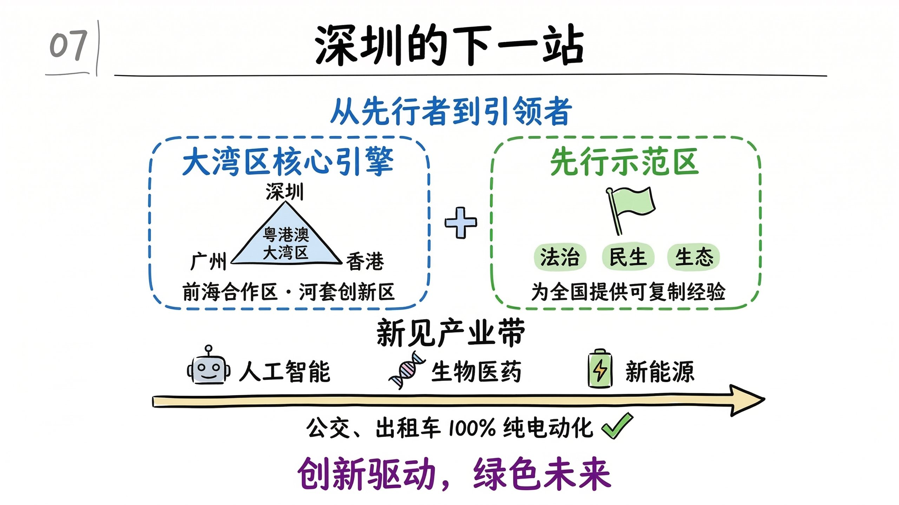
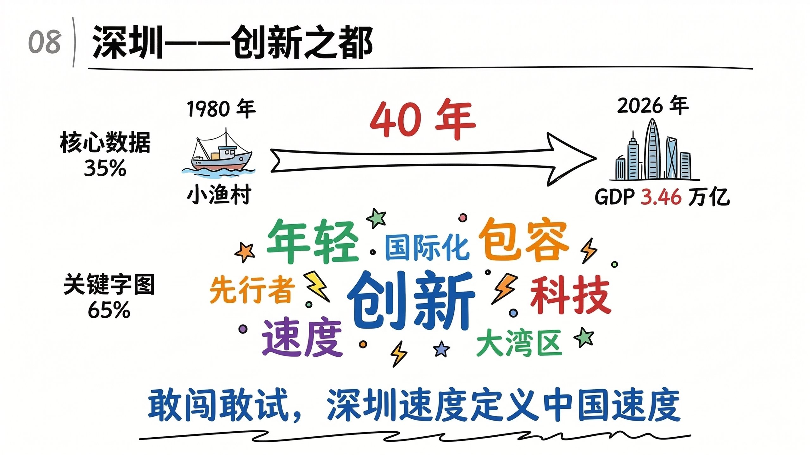

点击每一层，看同一套内容如何层层具象化
一张白板手绘风格的封面图，作为 PPT 的第一页。 【主标题区域】（画面正中偏上，约 40%） - 超大号粗体手写标题"深圳，敢闯敢试" - 标题左侧：摩天大楼简笔画；右侧：海浪简笔画 - 标题文字用蓝色马克笔，是全图最醒目元素 【副标题区域】（约 15%） - 橙色中号字："从小渔村到创新之都" - 下方手绘波浪线装饰 【装饰区域】 - 左下：地图简笔画，标注"广东"和"深圳" - 右下：正在起飞的火箭简笔画 - 标题周围散布蓝、绿、橙小星星 【底部】 - 灰色小号手写："粤港澳大湾区核心城市"

一张白板手绘风格的图，介绍深圳的基本概况。 【标题区域】（顶部 12%） - 左侧页码"02"，中间粗体标题"深圳在哪里？" 【内容区域】（75%） 中心：手绘中国地图，红点标注深圳，旁注香港 四个信息气泡围绕地图（虚线圆角框）： - 左上（蓝）：尺子图标 + "面积：1997 平方公里" - 右上（绿）：人群图标 + "人口：1766 万" - 左下（橙）：温度计图标 + "年均气温：23°C" - 右下（紫）：奖牌图标 + "中国四大一线城市" 每个气泡画虚线箭头指向中心地图 【底部区域】（13%） - 蓝色手写："粤港澳大湾区核心城市，紧邻香港"

一张白板手绘风格的图，展示深圳 40 年的崛起历程。 【标题区域】 - 页码"03" + 粗体标题"40 年奇迹" 【内容区域】 顶部引导语（蓝色）："从小渔村到国际大都市" 粗手绘水平箭头从左到右，5 个里程碑节点： - 节点1（红）：渔船图标 ↑ "1980年前 · 宝安县 · 人口不足3万" - 节点2（橙）：闪电图标 ↑ "1980年 · 经济特区成立" - 节点3（蓝）：股票图标 ↑ "1990年代 · 深交所成立" - 节点4（绿）：电脑图标 ↑ "2000年代 · 华为腾讯崛起" - 节点5（紫）：大楼图标 ↑ "2020年代 · GDP突破3万亿" 【底部区域】 - 绿色大字："GDP 增长超 14000 倍" + 火箭图标

一张白板手绘风格的图，展示深圳的科技产业生态。 【标题区域】 - 页码"04" + 粗体标题"中国硅谷" 【内容区域】 画面正中心：蓝色虚线圆，写"深圳"，下方"GDP 3.46 万亿" 围绕中心 5 个企业节点（圆角方框）： - 上（红）：信号塔图标 + "华为" · 全球通信巨头 - 右上（蓝）：聊天气泡图标 + "腾讯" · 微信诞生地 - 右下（橙）：无人机图标 + "大疆" · 全球份额超70% - 左下（绿）：汽车图标 + "比亚迪" · 新能源销量冠军 - 左上（紫）：快递盒图标 + "顺丰 · 物流领军者" 每个企业框到中心画手绘连线 【底部区域】 高新企业2.3 万家 ／ 上市公司300+ ／ 研发占GDP超5%

一张白板手绘风格的图，展示深圳的城市特色与文化。 【标题区域】 - 页码"05" + 粗体标题"来了就是深圳人" 【内容区域】 顶部引导语（橙色）："一座没有'外地人'的城市" 三列并排展示： 左列（蓝色） - 奔跑人图标 + 大字"年轻" - 要点："平均年龄32岁 · 最年轻大城市" 中列（绿色） - 多人手拉手图标 + 大字"包容" - 要点："95%来自全国 · 典型移民城市" 右列（橙色） - 地球图标 + 大字"国际化" - 要点："深港双城" · 大量外籍人士 【底部区域】 - 绿色加粗："务实 · 创新 · 包容"

一张白板手绘风格的图，展示深圳的标志性地标和景点。 【标题区域】 - 页码"06" + 粗体标题"深圳地标" 【内容区域】（三区域，虚线竖线分隔） 左侧（蓝色）"地标建筑" - 超高大楼："平安金融中心 · 592.5米" - 稍矮大楼："京基100 · 441.8米" - 展翅造型："市民中心" 中间（绿色）"自然景观" - 山峰："梧桐山 · 943.7米" - 海浪沙滩："大梅沙海滨" - 树木："红树林保护区" 右侧（橙色）"文化场所" - 打开的书："深圳图书馆" - 轮船："海上世界" - 画框："华侨城创意园" 【底部区域】 - 蓝色手写："东西涌——中国最美八大海岸线之一"

一张白板手绘风格的图，展示深圳的未来发展方向。 【标题区域】 - 页码"07" + 粗体标题"深圳的下一站" 【内容区域】（上下两层） 上层（两个大方向并排）： - 左（蓝色大框）"大湾区核心引擎" 深圳-香港-广州三角形，内写"粤港澳大湾区" 框底：前海合作区 · 河套创新区 - 右（绿色大框）"先行示范区" 旗帜图标 + 法治 · 民生 · 生态标签 两框之间画手绘加号连接 下层（新兴产业带，水平箭头）： - 机器人图标 → "人工智能" - DNA螺旋图标 → "生物医药" - 电池图标 → "新能源" 箭头下方："公交出租车100%纯电动化" + 绿色打勾 【底部区域】 - 紫色加粗："创新驱动，绿色未来"

一张白板手绘风格的总结图，作为"介绍深圳"PPT 的最后一页。 【标题区域】 - 页码"08" + 粗体标题"深圳——创新之都" 【内容区域】（上下两部分） 上半部（35%）： 大号箭头从左到右 - 左端：渔船图标 + "1980年 · 小渔村" - 右端：大楼群图标 + "2026年 · GDP 3.46万亿" - 中间红色大字"40年" 下半部（65%）关键词云： - 最大（蓝，居中）："创新" - 大（绿，左上）："年轻" 大（橙，右上）："包容" - 中（紫，左下）："速度" 中（红，右侧）："科技" - 中（蓝，上方）："国际化" - 小（绿，右下）："大湾区" 小（橙，左侧）："先行者" 【底部区域】 - 蓝色加粗大字："敢闯敢试，深圳速度定义中国速度" - 下方手绘波浪线收尾

点击每层节点逐步展开 · 一句话 → 大纲要点 → 完整内容 → 图片提示词